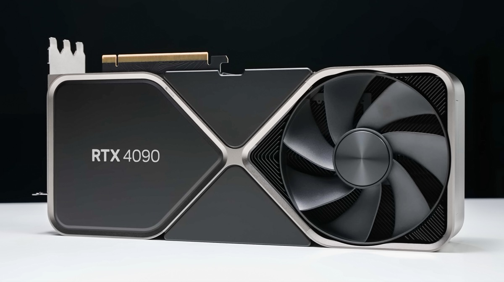

RTX 5090 — המפרטים ויכולות ה-AI
RTX 5090 של NVIDIA הוא כרטיס המסך החזק בעולם ל-2026 לצרכן פרטי: 32GB GDDR7, 3352 Tensor Cores ייעודיים לחישובי AI, ו-1,457 TOPS (Tera Operations Per Second). זה פי 35 מה-NPU של מחשב Copilot+ PC. NVIDIA מגדירה את קטגוריית "RTX AI PC" — כל מחשב עם כרטיס RTX (4000 ומעלה) הופך למכונת AI מקומית. כרטיסי RTX 4060 ו-4070 (מחיר 1,500–3,500 ש"ח) מספיקים לרוב משימות ה-AI הביתיות.

DLSS 4 — AI שמכפיל ביצועי גיימינג
DLSS 4 (Deep Learning Super Sampling) הוא הטכנולוגיה שהפכה את RTX לחובה לגיימרים:
- Multi-Frame Generation: יצירת עד 3 פריימים בין כל פריים שהמשחק מרנדר. תוצאה: קצב פריימים גבוה פי 4 בלי להעמיס על ה-CPU.
- Super Resolution: רנדור ברזולוציה נמוכה ושחזורה עם AI לרזולוציה גבוהה — תמונה חדה כמו 4K, ביצועים כמו 1080p.
- Ray Reconstruction: שיפור ray tracing עם AI לתמונות ריאליסטיות יותר.
במשחקים תומכים (Cyberpunk 2077, Alan Wake 2, Black Myth: Wukong) DLSS 4 מספק 300–500% שיפור בביצועים לעומת נטיבי ללא AI.
הרצת מודלי LLM מקומית — ChatGPT בבית
RTX 4090 ו-5090 עם 24–32GB VRAM מאפשרים הרצת מודלי שפה גדולים מקומית, ללא תשלום לשרתי ענן:
- Llama 3.1 70B: רץ על RTX 5090, איכות דומה ל-GPT-4 Turbo. ללא חיבור לאינטרנט, ללא עלות לשאילתה.
- Mistral 7B / Phi-3: רצים על RTX 4060 (8GB VRAM). מספיקים לכתיבה, סיכומים, שאלות-תשובות.
- Stable Diffusion XL / Flux: יצירת תמונות מטקסט בשניות, מקומית לחלוטין.
- HunyuanVideo / Wan 2.1: יצירת וידאו AI מקומית — דורש RTX 4090+ ו-24GB VRAM.
ACE — דמויות משחק עם AI מקומי
NVIDIA ACE (Avatar Cloud Engine) מאפשר למפתחי משחקים להטמיע NPC עם AI שמגיב לשיחה בזמן אמת. בדמו עם Cyberpunk 2077: פנייה לדמות בשפה טבעית מקבלת תגובה קולית חכמה שמתאימה להקשר המשחק. Inworld AI ו-Convai כבר משלבים ACE במשחקים ב-2025–2026. מי שמשחק כיום בגיימינג עם NPC חכמים — GPU חזק הוא הדרישה.
מחיר בישראל ומי צריך לקנות?
מחירי כרטיסי RTX בישראל (2026): RTX 5090 — כ-15,000–18,000 ש"ח; RTX 5080 — כ-8,000–10,000 ש"ח; RTX 5070 Ti — כ-5,500–7,000 ש"ח; RTX 4060 — כ-1,400–1,800 ש"ח. מי צריך RTX 5090? יוצרי תוכן שרוצים להריץ AI מקומית בלי הגבלה, מפתחי AI עם מודלים גדולים, ומי שמשחק ב-4K ב-144fps. לשאר: RTX 5070 Ti מספק 90% מהיכולות ב-40% מהמחיר. לשימוש AI בסיסי: RTX 4060 מספיק ומחירו סביר.